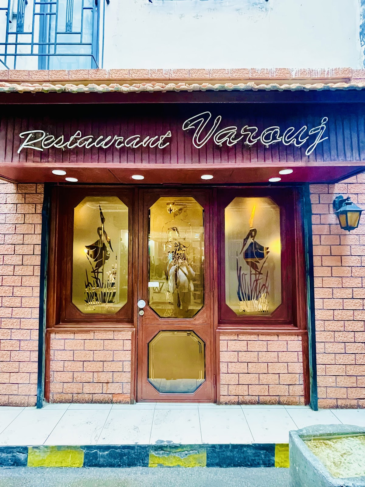

the story, in marker
45 years of one man's cooking
For over forty-five years Varouj has run this small wood-panelled room in Bourj Hammoud on one rule: he cooks, you eat. Mante, ich, soujouk with tomatoes, kebbe in yogurt — whatever the day brings, it arrives hot, honest and exactly right. Genuine, flavorful dishes that reflect tradition and care.
The room is small, the walls are wood, and the dishes come out the moment they're ready. Mante, ich, soujouk — whatever Varouj decided this morning.
1970s → today. Same hands.